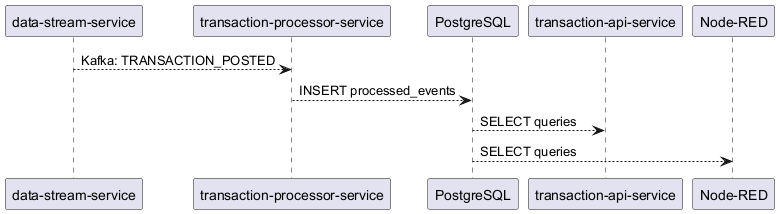
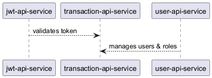
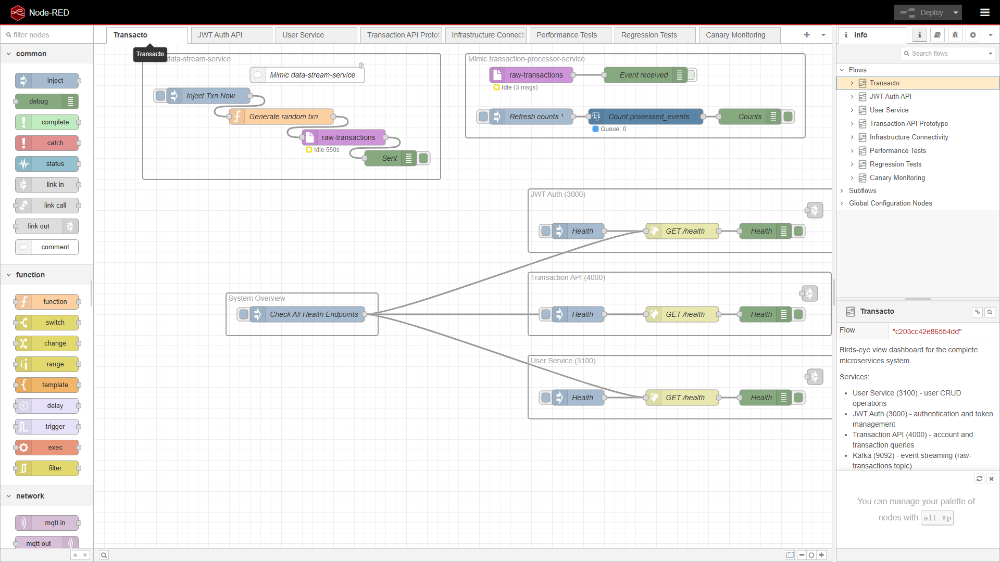
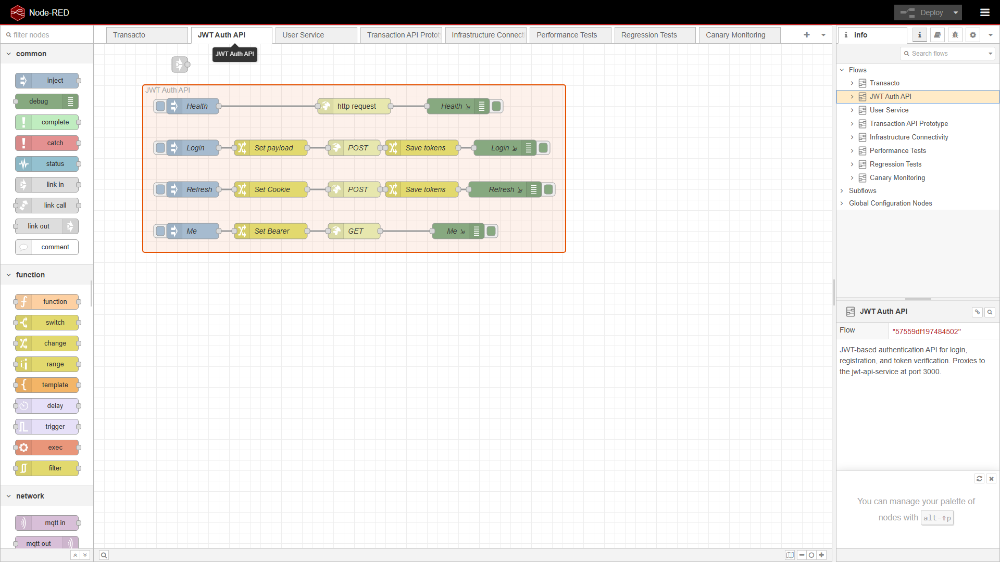
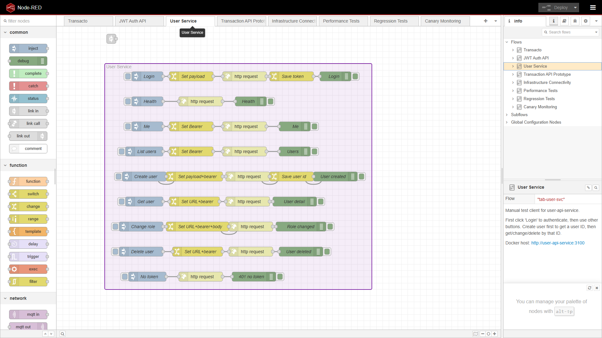
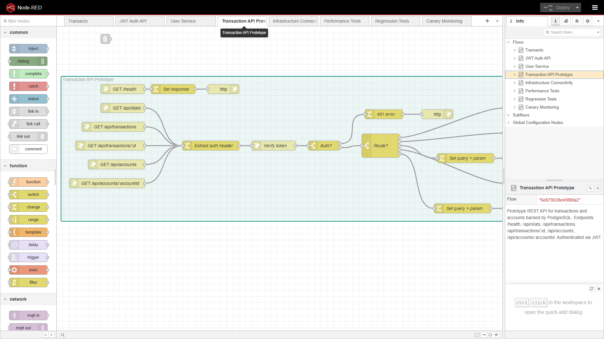
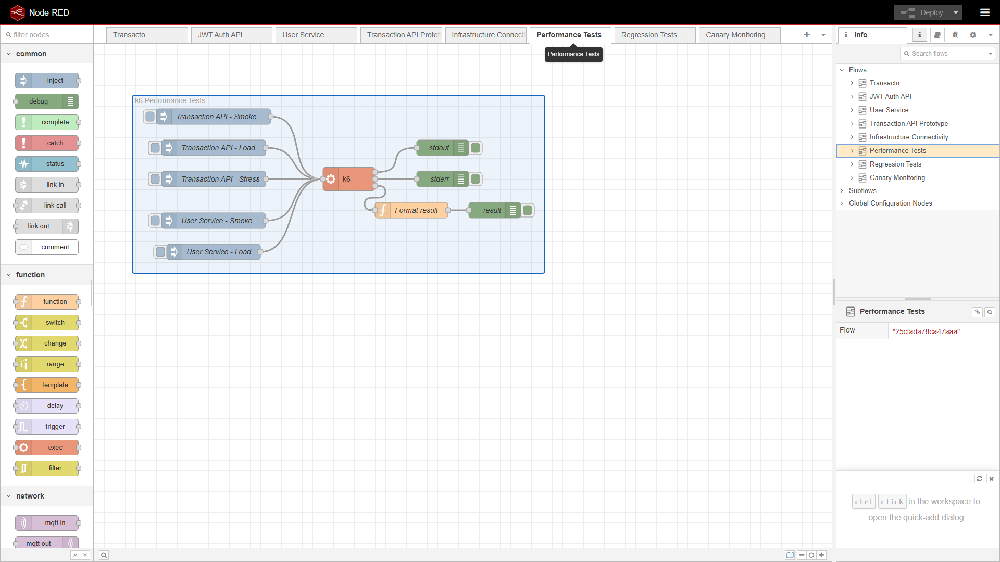
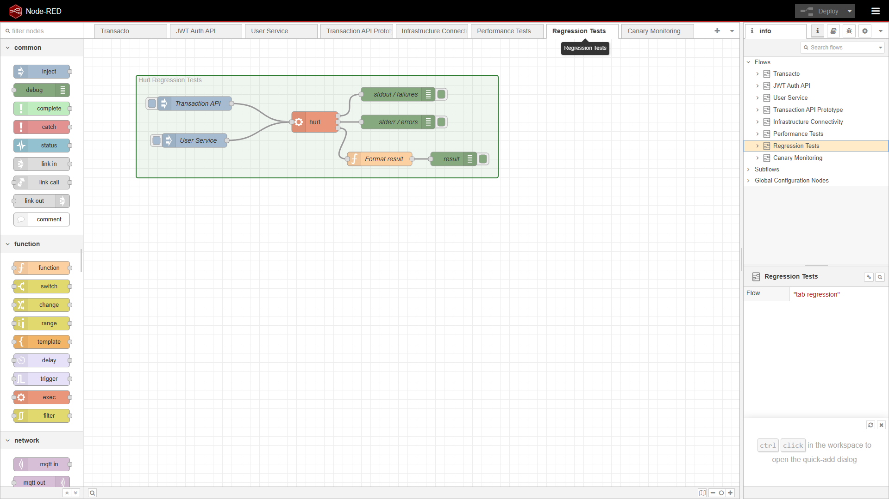
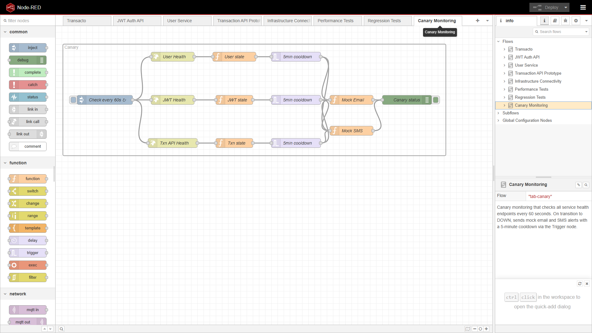

Node-RED · Hurl · k6 · Docker
Build a running prototype first — executable tests from day one
I work differently.
Build a working prototype first. Then hand it over.
Let's imagine a company called Transacto.
Existing services:
They ask me: "Design a new REST API for transactions and accounts."
This is how I did it.


Before designing the new API, I needed to understand how the existing services work.
I created two Node-RED flows to explore them:
This helped me understand the authentication flow, data models, and API patterns.
Instead of drawing diagrams, I opened Node-RED and built the API.
A running prototype is better because:

The main view. Shows all services and their health status.
Login, register, refresh tokens. Every call needs a valid token.

Create, read, update, delete users. Admins have more rights.

The new service I designed with 6 endpoints.
GET /healthGET /api/statsGET /api/transactionsGET /api/transactions/:idGET /api/accountsGET /api/accounts/:id
Load testing from the start with k6.

Executable tests with Hurl. Same tests check both the prototype and the real implementation.

Node-RED mimics AWS Canary — checking if systems are healthy.

Every 60s checks all services. If one is down, sends alert (mock email + SMS). 5-minute cooldown.
When you hire an architect, you want someone who:
This project shows exactly that.
git clone https://github.com/4arturas/transacto.git
cd transacto
docker compose up --build
| Web UI | Address |
|---|---|
| Transaction dashboard | http://localhost:4000 |
| Admin panel | http://localhost:3100 |
| Node-RED editor | http://localhost:1880 |
| JWT Auth API | http://localhost:3000 |
| Role | Password | |
|---|---|---|
| Admin | admin@example.com | admin123 |
| Regular user | alice@example.com | secret123 |
# Functional (Hurl)
hurl --test --file-root . tests/regression/user-service-tests/run-all.hurl
hurl --test --file-root . tests/regression/jwt-api-service-tests/run-all.hurl
hurl --test --file-root . tests/regression/transaction-api-service-tests/run-all.hurl
# Performance (k6)
k6 run tests/performance/user-service-load.js
k6 run tests/performance/jwt-api-load.js
k6 run tests/performance/transaction-api-load.js
Repository: github.com/4arturas/transacto
Spring Boot 4.0.6 · Java 25 · Node-RED · Kafka · PostgreSQL · Docker
Questions?